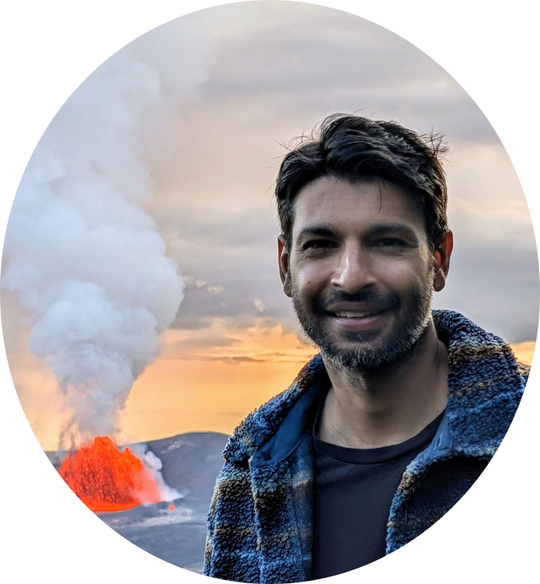
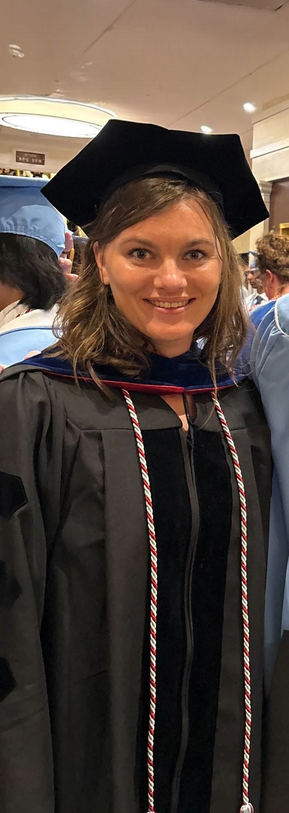
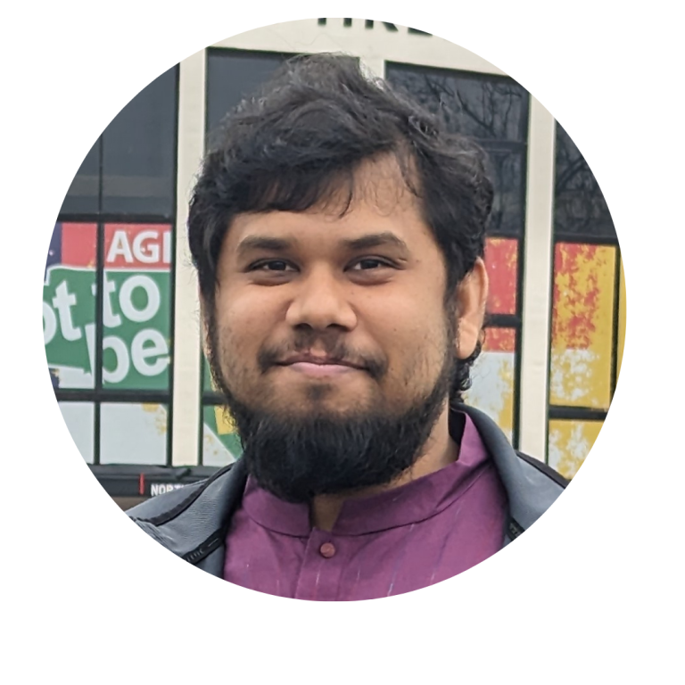
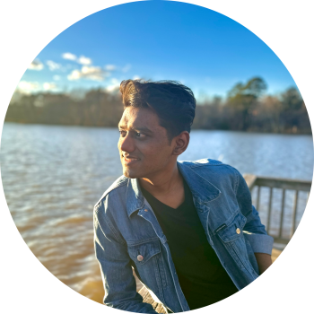
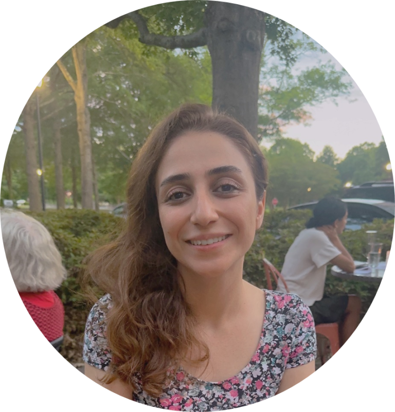
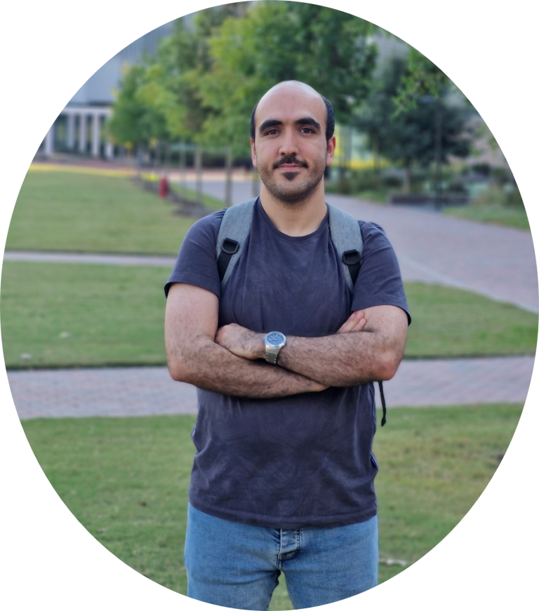
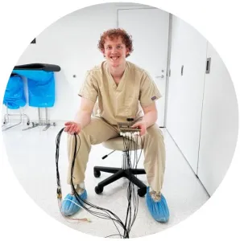

The lab.
A small group working at the intersection of physical acoustics, biomedical engineering, and signal processing.
Dr. Marie Muller
Dr. Marie Muller is a Professor, University Faculty Scholar and Interim Director of Graduate Programs in Mechanical and Aerospace Engineering at NC State, and an Associate Faculty member of the Joint Department of Biomedical Engineering at UNC and NC State.
She received her B.S. in Physics from Pierre et Marie Curie University in Paris in 2002 and her Ph.D. in Physical Acoustics from Paris Diderot University in 2006. After a postdoctoral fellowship at the Erasmus Medical Center in Rotterdam, she returned to Paris as an Assistant Professor with the Institut Langevin. In 2014 she joined NC State.
Postdocs.

Dr. Sashank Gautam
Postdoc, MAE
Ph.D. - Aerospace Engineering & Mechanics, University of Alabama (2021)
BE - Mechanical Engineering, Tribhuvan University, Nepal
Working on QUS focused on lung tissue structures and complex media using simulation and experiments.
Off-hours: soccer, hiking, traveling.

Dr. Kyla Bosh
Postdoc, BME / MAE
Ph.D. - Biomedical Engineering, UNC & NC State (2025)
BS - Biomedical Engineering, Virginia Commonwealth University, Richmond, VA.
Studying ultrasound–microgel interactions to characterize clot contraction and support artificial platelet development.
Off-hours: traveling, outdoor recreation.
Graduate Students.

Shahriar Chowdhury
Ph.D. Student, MAE
M.S. - Engineering Science, University of Mississippi
B.S. - Mechanical Engineering, Bangladesh University of Engineering and Technology
Quantitative investigation of pulmonary edema and fibrosis in rodent and human lungs using ultrasound.
Off-hours: pingpong, traveling, soccer.

Aniket Vilas Beldar
Ph.D. Student, MAE
M.S. - Mechanical Engineering, Michigan Technological University
Investigating the interaction between platelet-like particles (PLPs) and ultrasound to accelerate wound healing.
Off-hours: drawing portraits, anime, chess.

Parniyan Norouzzadeh
Ph.D. Student, MAE
M.S. - Electrical Engineering (Control), University of Tabriz, Iran
B.S. - Electrical Engineering, Sahand University of Technology, Iran
Ultrasound multiple scattering with microbubbles to quantify tumor angiogenesis and microvascular architecture.
Off-hours: walking, dancing, piano.

Hossein Ahmadian
Ph.D. Student, MAE
M.S. - Chemical Engineering (Biomedical Track), Sharif University of Technology, Iran
B.S. - Chemical & Aerospace Engineering, Sharif University of Technology, Iran
Connecting fundamental acoustic theories to real-world tissue phenomena using high-performance computational tools.
Off-hours: running, marathon, endurance training.

Caleb Moore
M.S. Student, MAE
B.S. - Mechanical & Aerospace Engineering, NC State University
Experimental characterization and ultrasonic wave simulation across complex structured bone phantoms.
Off-hours: endurance races, marathons, triathlons.
Lab Alumni.
Former postdoctoral scholars, graduate researchers, and undergraduate alumni from the lab.
Former Postdoctoral Researchers
- Dr. François Legrand — Assistant Professor (MCF, ECM), Laboratoire de Mécanique et d’Acoustique, Marseille, France [2025 – Present]
- Dr. Hualong Du — Staff Scientist at Applied Research Associates, Inc. (ARA)
Ph.D. Alumni
- Austin McCandless — Consultant
- Azadeh Dashti — ORISE Research Fellow at FDA
- Roshan Roshankhah — Sr. Ultrasound Engineer at Johnson & Johnson MedTech
- Yasamin Karbalaeisadegh — R&D Engineer at Abbott
- Omid Yousefian — Data Scientist at 32BJ Funds
- Kaustav Mohanty — Imaging Engineering Manager at GE HealthCare